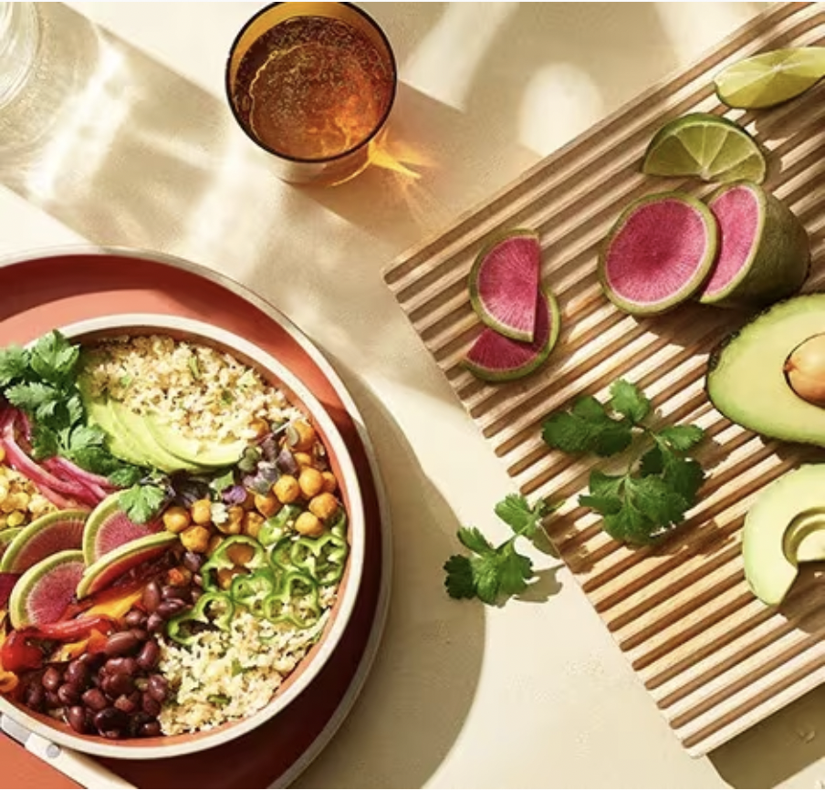

Cauliflower Lime Rice Bowl

Using cauliflower instead of rice as a base in this bowl opens up a world of food options.
Choose your toppings to adapt this dish to any culture or palate of your choosing. You could use this as a base for a curry, a mediterranean dish, or a salad.
Recipe courtesy of Vitamix website.
Ingredients
- 1 head cauliflower, cut into florets
- 2 Tablespoons extra virgin olive oil, divided use, optional
- 2 small limes, juiced
- 1 bunch fresh cilantro leaves, chopped
Instructions
- Place cauliflower florets into the Vitamix container and add just enough water so the cauliflower floats above the blades. Secure the lid.
- Select Variable 6. Pulse 5 times or until you have small pieces resembling rice. Strain and pat dry with a towel to remove excess water.
- Working in two batches, add 1 Tablespoon olive oil to a large non-stick skillet set over high heat. Add half the cauliflower to the pan and cook for 3 to 5 minutes. Remove from heat and set aside in a separate bowl.
- Add remaining 1 Tablespoon olive oil to the skillet, followed by remaining uncooked cauliflower. Cook for 3 to 5 minutes, then combine all cooked cauliflower in a bowl and season with cilantro and lime juice.